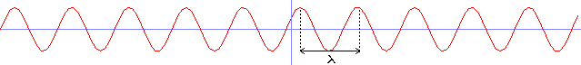
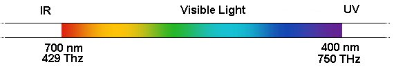
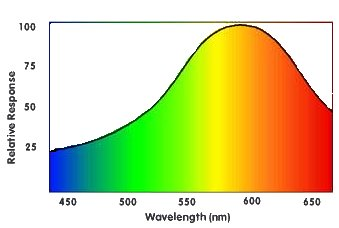
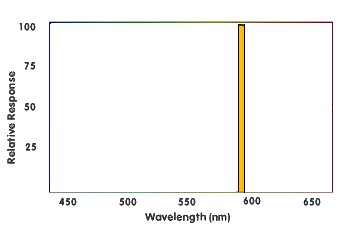
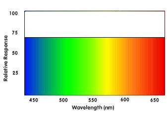
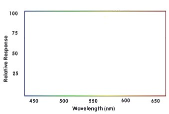
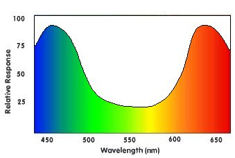
以下是常见 RGB 颜色值的表格：
| R | G | B | 十六进制值 |
颜色 |
| 0 | 0 | 0 | 000000 | 黑色 |
| 255 | 0 | 0 | FF0000 | 红色 |
| 0 | 255 | 0 | 00FF00 | 绿色 |
| 0 | 0 | 255 | 0000FF | 蓝色 |
| 255 | 255 | 0 | FFFF00 | 黄色 |
| 255 | 0 | 255 | FF00FF | 品红色 |
| 0 | 255 | 255 | 00FFFF | 青色 |
| 255 |
128 |
128 |
FF8080 |
亮红色 |
| 128 |
255 |
128 |
80FF80 |
亮绿色 |
| 128 |
128 |
255 |
8080FF |
亮蓝色 |
| 64 | 64 | 64 | 404040 | 深灰色 |
| 128 | 128 | 128 | 808080 | 中灰色 |
| 192 | 192 | 192 | C0C0C0 | 亮灰色 |
| 255 | 255 | 255 | FFFFFF | 白色 |
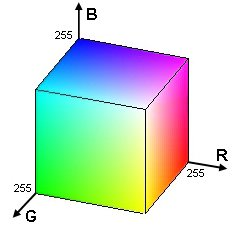
| 操作 |
公式 |
效果 |
| 负片 |
255-C |
返回相反的颜色，例如白色变为黑色，红色变为青色，…… |
| 变暗 |
C/p 或 C-p |
将颜色除以某个常数（大于 1），或从中减去一个常数，使其变暗。 |
| 变亮 |
C*p 或 C+p |
将颜色乘以某个常数（大于 1），或向其添加一个常数，使其变亮。 |
| 灰度 |
0.2126 * R + 0.7152 * G + 0.0722 * B |
计算 3 个通道的加权平均值（此处基于 ITU Rec.709），以获得具有相同亮度的灰色。 |
| 移除通道 |
R=0，G=0 和/或 B=0 |
通过将一个或多个通道设置为 0，从图像中完全移除该颜色分量。 |
| 交换通道 |
R=G，G=R，…… |
交换两个颜色通道的值，以获得颜色完全不同的图像。 |
int main(int argc, char *argv[])
{
unsigned long w = 0, h = 0;
std::vector<ColorRGB> image;
loadImage(image, w, h, "pics/flower.png");
screen(w, h, 0, "RGB Color");
ColorRGB color; //the color for the pixels
for(int y = 0; y < h; y++)
for(int x = 0; x < w; x++)
{
//here the negative color is calculated!
color.r = 255 - image[y * w + x].r;
color.g = 255 - image[y * w + x].g;
color.b = 255 - image[y * w + x].b;
pset(x, y, color);
}
redraw();
sleep();
return 0;
}
|
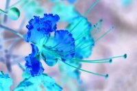
color.r = image[y * w + x].r / 2;
color.g = image[y * w + x].g / 2;
color.b = image[y * w + x].b / 2;
|
color.r = int(image[y * w + x].r / 1.5);
color.g = int(image[y * w + x].g / 1.5);
color.b = int(image[y * w + x].b / 1.5);
|
color.r = image[y * w + x].r * 2;
color.g = image[y * w + x].g * 2;
color.b = image[y * w + x].b * 2;
if(color.r > 255) color.r = 255;
if(color.g > 255) color.g = 255;
if(color.b > 255) color.b = 255;
|
color.r = image[y * w + x].r + 50;
color.g = image[y * w + x].g + 50;
color.b = image[y * w + x].b + 50;
if(color.r > 255) color.r = 255;
if(color.g > 255) color.g = 255;
if(color.b > 255) color.b = 255;
|
color.r = image[y * w + x].r - 50;
color.g = image[y * w + x].g - 50;
color.b = image[y * w + x].b - 50;
if(color.r < 0) color.r = 0;
if(color.g < 0) color.g = 0;
if(color.b < 0) color.b = 0;
|
color.r = color.g = color.b = 0.2126 * image[y * w + x].r + 0.7152 * image[y * w + x].g + 0.0722 * image[y * w + x].b;
|
color.r = 0;
//red component set to zero
color.g = image[y * w + x].g;
color.b = image[y * w + x].b;
|
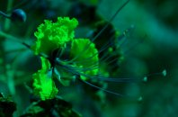
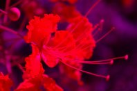
color.r = image[y * w + x].g; //the green component of the image
color.g = image[y * w + x].r; //the red component of the image
color.b = image[y * w + x].b; //the blue component of the image
|
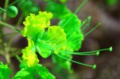
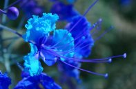
color.r = image[y * w + x].r; //the red component of the image
color.g = image[y * w + x].r; //the red component of the image
color.b = image[y * w + x].b; //the blue component of the image
|
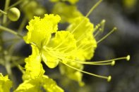
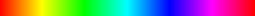
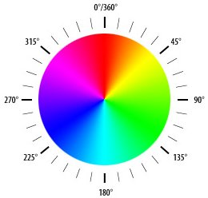
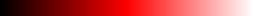
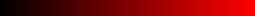
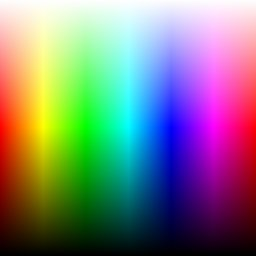
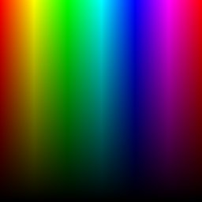
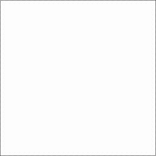
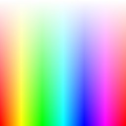
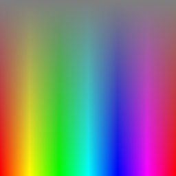
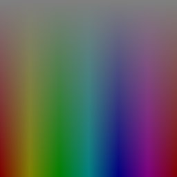
ColorHSL RGBtoHSL(ColorRGB colorRGB)
{
float r, g, b, h, s, l; //this function works with floats between 0 and 1
r = colorRGB.r / 256.0;
g = colorRGB.g / 256.0;
b = colorRGB.b / 256.0;
|
float maxColor = max(r, max(g, b));
float minColor = min(r, min(g, b));
|
//R == G == B, so it's a shade of gray
{
h = 0.0; //it doesn't matter what value it has
s = 0.0;
l = r; //doesn't matter if you pick r, g, or b
}
|
else
{
l = (minColor + maxColor) / 2;
if(l < 0.5) s = (maxColor - minColor) / (maxColor + minColor);
else s = (maxColor - minColor) / (2.0 - maxColor - minColor);
if(r == maxColor) h = (g - b) / (maxColor - minColor);
else if(g == maxColor) h = 2.0 + (b - r) / (maxColor - minColor);
else h = 4.0 + (r - g) / (maxColor - minColor);
h /= 6; //to bring it to a number between 0 and 1
if(h < 0) h ++;
}
|
ColorHSL colorHSL;
colorHSL.h = int(h * 255.0);
colorHSL.s = int(s * 255.0);
colorHSL.l = int(l * 255.0);
return colorHSL;
}
|
ColorRGB HSLtoRGB(ColorHSL colorHSL)
{
float r, g, b, h, s, l; //this function works with floats between 0 and 1
float temp1, temp2, tempr, tempg, tempb;
h = colorHSL.h / 256.0;
s = colorHSL.s / 256.0;
l = colorHSL.l / 256.0;
|
//If saturation is 0, the color is a shade of gray
if(s == 0) r = g = b = l;
|
//If saturation > 0, more complex calculations are needed
else
{
//Set the temporary values
if(l < 0.5) temp2 = l * (1 + s);
else temp2 = (l + s) - (l * s);
temp1 = 2 * l - temp2;
tempr = h + 1.0 / 3.0;
if(tempr > 1) tempr--;
tempg = h;
tempb = h - 1.0 / 3.0;
if(tempb < 0) tempb++;
//Red
if(tempr < 1.0 / 6.0) r = temp1 + (temp2 - temp1) * 6.0 * tempr;
else if(tempr < 0.5) r = temp2;
else if(tempr < 2.0 / 3.0) r = temp1 + (temp2 - temp1) * ((2.0 / 3.0) - tempr) * 6.0;
else r = temp1;
//Green
if(tempg < 1.0 / 6.0) g = temp1 + (temp2 - temp1) * 6.0 * tempg;
else if(tempg < 0.5) g = temp2;
else if(tempg < 2.0 / 3.0) g = temp1 + (temp2 - temp1) * ((2.0 / 3.0) - tempg) * 6.0;
else g = temp1;
//Blue
if(tempb < 1.0 / 6.0) b = temp1 + (temp2 - temp1) * 6.0 * tempb;
else if(tempb < 0.5) b = temp2;
else if(tempb < 2.0 / 3.0) b = temp1 + (temp2 - temp1) * ((2.0 / 3.0) - tempb) * 6.0;
else b = temp1;
}
|
ColorRGB colorRGB;
colorRGB.r = int(r * 255.0);
colorRGB.g = int(g * 255.0);
colorRGB.b = int(b * 255.0);
return colorRGB;
}
|
ColorHSV RGBtoHSV(ColorRGB colorRGB)
{
float r, g, b, h, s, v; //this function works with floats between 0 and 1
r = colorRGB.r / 256.0;
g = colorRGB.g / 256.0;
b = colorRGB.b / 256.0;
float maxColor = max(r, max(g, b));
float minColor = min(r, min(g, b));
v = maxColor;
|
if(maxColor == 0) //avoid division by zero when the color is black
{
s = 0;
}
else
{
s = (maxColor - minColor) / maxColor;
}
|
if(s == 0)
{
h = 0; //it doesn't matter what value it has
}
else
{
if(r == maxColor) h = (g - b) / (maxColor-minColor);
else if(g == maxColor) h = 2.0 + (b - r) / (maxColor - minColor);
else h = 4.0 + (r - g) / (maxColor - minColor);
h /= 6.0; //to bring it to a number between 0 and 1
if (h < 0) h++;
}
|
ColorHSV colorHSV;
colorHSV.h = int(h * 255.0);
colorHSV.s = int(s * 255.0);
colorHSV.v = int(v * 255.0);
return colorHSV;
}
|
ColorRGB HSVtoRGB(ColorHSV colorHSV)
{
float r, g, b, h, s, v; //this function works with floats between 0 and 1
h = colorHSV.h / 256.0;
s = colorHSV.s / 256.0;
v = colorHSV.v / 256.0;
|
//If saturation is 0, the color is a shade of gray
if(s == 0) r = g = b = v;
|
//If saturation > 0, more complex calculations are needed
else
{
float f, p, q, t;
int i;
h *= 6; //to bring hue to a number between 0 and 6, better for the calculations
i = int(floor(h)); //e.g. 2.7 becomes 2 and 3.01 becomes 3 or 4.9999 becomes 4
f = h - i; //the fractional part of h
p = v * (1 - s);
q = v * (1 - (s * f));
t = v * (1 - (s * (1 - f)));
switch(i)
{
case 0: r = v; g = t; b = p; break;
case 1: r = q; g = v; b = p; break;
case 2: r = p; g = v; b = t; break;
case 3: r = p; g = q; b = v; break;
case 4: r = t; g = p; b = v; break;
case 5: r = v; g = p; b = q; break;
}
}
|
ColorRGB colorRGB;
colorRGB.r = int(r * 255.0);
colorRGB.g = int(g * 255.0);
colorRGB.b = int(b * 255.0);
return colorRGB;
}
|
int main(int argc, char *argv[])
{
ColorRGB colorRGB;
ColorHSL colorHSL;
unsigned long w, h;
std::vector<ColorRGB> image;
loadImage(image, w, h, "pics/flower.png");
screen(w, h, 0, "RGB Color");
for(int y = 0; y < h; y++)
for(int x = 0; x < w; x++)
{
//store the color of the image in variables R, G and B
colorRGB = image[y * w + x];
//calculate H, S and L out of R, G and B
colorHSL = RGBtoHSL(colorRGB);
//change Hue
colorHSL.h += int(42.5 * 1);
colorHSL.h %= 255;
//convert back to RGB
colorRGB = HSLtoRGB(colorHSL);
//plot the pixel
pset(x, y, colorRGB);
}
redraw();
sleep();
return 0;
}
|
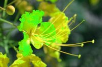
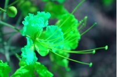
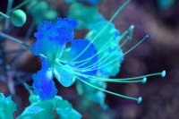
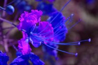
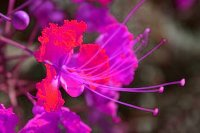
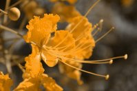
colorHSV.s = int(colorHSV.s * 2.5);
if(colorHSV.s > 255) colorHSV.s = 255;
|
colorHSV.s = colorHSV.s - 100;
if(colorHSV.s < 0) colorHSV.s = 0;
|
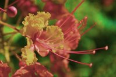
colorHSV.l -= 50;
if(colorHSV.l < 0) colorHSV.l = 0;
|
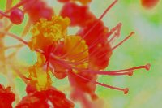
color.r = 255.0 * std::pow(image[y * w + x].r / 255.0, 2.2);
color.g = 255.0 * std::pow(image[y * w + x].g / 255.0, 2.2);
color.b = 255.0 * std::pow(image[y * w + x].b / 255.0, 2.2);
|
image[y * w + x].r = 255.0 * std::pow(color.r / 255.0, 1 / 2.2);
image[y * w + x].g = 255.0 * std::pow(color.g / 255.0, 1 / 2.2);
image[y * w + x].b = 255.0 * std::pow(color.b / 255.0, 1 / 2.2);
|